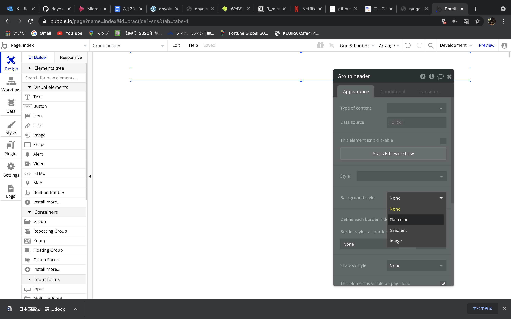

<!DOCTYPE html>
<!--[if lt IE 7]>      <html class="no-js lt-ie9 lt-ie8 lt-ie7"> <![endif]-->
<!--[if IE 7]>         <html class="no-js lt-ie9 lt-ie8"> <![endif]-->
<!--[if IE 8]>         <html class="no-js lt-ie9"> <![endif]-->
<!--[if gt IE 8]><!--> <html class="no-js"> <!--<![endif]-->
	<head>
	<meta charset="utf-8">
	<meta http-equiv="X-UA-Compatible" content="IE=edge">
	<title>ryugalabo</title>
	<meta name="viewport" content="width=device-width, initial-scale=1">
	<meta name="description" content="Free HTML5 Website Template by FreeHTML5.co" />
	<meta name="keywords" content="free html5, free template, free bootstrap, free website template, html5, css3, mobile first, responsive" />
	<meta name="author" content="FreeHTML5.co" />

  <!-- 
	//////////////////////////////////////////////////////

	FREE HTML5 TEMPLATE 
	DESIGNED & DEVELOPED by FreeHTML5.co
		
	Website: 		http://freehtml5.co/
	Email: 			info@freehtml5.co
	Twitter: 		http://twitter.com/fh5co
	Facebook: 		https://www.facebook.com/fh5co

	//////////////////////////////////////////////////////
	 -->

  	<!-- Facebook and Twitter integration -->
	<meta property="og:title" content=""/>
	<meta property="og:image" content=""/>
	<meta property="og:url" content=""/>
	<meta property="og:site_name" content=""/>
	<meta property="og:description" content=""/>
	<meta name="twitter:title" content="" />
	<meta name="twitter:image" content="" />
	<meta name="twitter:url" content="" />
	<meta name="twitter:card" content="" />

	<!-- Place favicon.ico and apple-touch-icon.png in the root directory -->
	<link rel="shortcut icon" href="favicon.ico">

	<link href="https://fonts.googleapis.com/css?family=Raleway:200,300,400,700" rel="stylesheet">
	
	<!-- Animate.css -->
	<link rel="stylesheet" href="css/animate.css">
	<!-- Icomoon Icon Fonts-->
	<link rel="stylesheet" href="css/icomoon.css">
	<!-- Bootstrap  -->
	<link rel="stylesheet" href="css/bootstrap.css">
	<!-- Flexslider  -->
	<link rel="stylesheet" href="css/flexslider.css">
	<!-- Owl Carousel  -->
	<link rel="stylesheet" href="css/owl.carousel.min.css">
	<link rel="stylesheet" href="css/owl.theme.default.min.css">
	<!-- Theme style  -->
	<link rel="stylesheet" href="css/style.css">

	<!-- Modernizr JS -->
	<script src="js/modernizr-2.6.2.min.js"></script>
	<!-- FOR IE9 below -->
	<!--[if lt IE 9]>
	<script src="js/respond.min.js"></script>
	<![endif]-->

	</head>
	<body>
	
	
	<div id="fh5co-page">
	<header id="fh5co-header" role="banner">
		<div class="container">
			<div class="header-inner">
				<h1><a href="index.html">ryugalabo</a></h1>
				<nav role="navigation">
					<ul>
						<li><a href="work.html">My Art Gallery</a></li>
						<li><p><a href="recent.html">Recent From Blog</a></li>
						<li><a href="about.html">About Me</a></li>
						<li><a href="contact.html">Contact</a></li>
						<li class="cta"><a href="#">Get started</a></li>
					</ul>
				</nav>
			</div>
		</div>
	</header>
	
	<div class="container">
    
    <title>ノーコード(Bubble)によるWebアプリ開発１</title>
    </head>         
    <body>
        <h1>ノーコード(Bubble)によるWebアプリ開発１(5/18)</h1>
            <h2>TwitterのようなSNSアプリを作ってみよう＜その１＞</h2>
                <p>まず、Bubbleのトップページに来たら,右上にあるSign upからアカウント登録を行う。<br>
                    その後、ログインできたらWelcome画面に飛ぶので、一番下にあるcreate a new appをクリックすると下記のような画面が出てくる。<br>
                    一番上の空欄に開発するアプリ名を入力し、その他の空欄は以下の画像のように入力しアプリを作成するをクリックする。<br></p>
                    <div>
                        
                    </div>
                <p>ロードが完了すると、以下のような画面が表示される。<br>
                    左側の赤字で記されているNew Application Assistantは開発するアプリの簡単な設定を行えるが、今回は無視して進めていく。<br>
                    そして、下記の画面の左下にある空白のページを始めるをクリックし、アシスタントを閉じるをクリックすることで編集画面が出てくる。<br></p>
                    <div>
                        
                    </div>
                <p>編集ページが表示されたら、表示されているindexページをダブルクリックすると下記のようなプロパティ画面が表示され、画面の大きさを設定する。<br>
                    今回は、幅960、高さ2000に設定し進めていく。<br></p>
                    <div>
                        
                    </div>
                <p>設定が完了したら、右側に表示されているDesignタブの中のContainersのGroupを選択し、デザインエリアの中でクリックする。<br>
                    すると、Group Aが表示される。これをアプリのヘッダーとするため名前を下記の画面のようにGroup headerに変更する。<br>
                    そして、それを画面の上の方にドラックして持っていき、画面いっぱいに広げて配置する。<br></p>
                    <div>
                        
                    </div>
                <p>次に、ヘッダーの色を白く変更する。ヘッダーをダブルクリックし、Styleと書かれた項目の右下にあるRemove styleをクリックする。
                    すると、項目が増え、Background styleからFlat　colorを選択する。<br></p>
                    <div>
                        
                    </div>
                <p>すると下記の画面ようにカラーを選択する項目が表示されるので、白にする。<br></p>
                    <div>
                        
                    </div>
                <p>次に、コンテンツをいれるボディ部分を作成する。先ほどと同じようにGroupを選択し、Group名をGroup Bodyに変更する<br>
                    そして、幅を画面いっぱいの960、高さを1000に設定する。それをヘッダーの境目とぴったり重なる部分へドラックし配置する。<br></p>
                    <div>
                        
                    </div>
                <p>そしてこれもヘッダーと同様色を変更する。ヘッダーとの境目をわかりやすくするために灰色に設定する。<br>
                    これでベースとなる背景の作成は終了！<br></p>
                    <div>
                        
                    </div>
    </div>

				<!-- jQuery -->
	<script src="js/jquery.min.js"></script>
	<!-- jQuery Easing -->
	<script src="js/jquery.easing.1.3.js"></script>
	<!-- Bootstrap -->
	<script src="js/bootstrap.min.js"></script>
	<!-- Waypoints -->
	<script src="js/jquery.waypoints.min.js"></script>
	<!-- Owl Carousel -->
	<script src="js/owl.carousel.min.js"></script>
	<!-- Flexslider -->
	<script src="js/jquery.flexslider-min.js"></script>

	<!-- MAIN JS -->
	<script src="js/main.js"></script>

    </body>
</html>